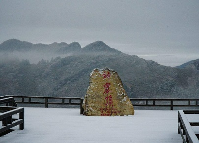
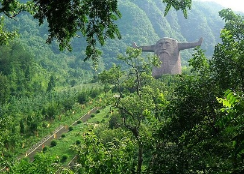
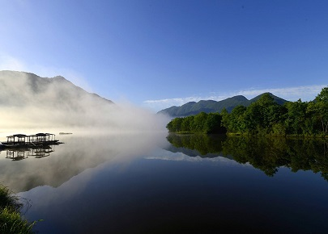

morly旅游网
行走于山水之间，体味林泉之清秀，悠哉，美哉，我亦向往。然而有一个去处在我心中却远远凌驾于它们之上，那就是极富神话色彩驰名中外的湖北——“神农架
神农架林区，简称神农架，1970年经国务院批准建制，直属湖北省管辖，是中国唯一以“林区”命名的行政区划。处于武当山，神农架，长江三峡组成的旅游带上。神农架林区位于湖北省西部，东与湖北省襄阳市保康县接壤，西与重庆市巫山县毗邻，南依兴山、巴东而濒长江三峡，北倚十堰市房县、竹山县，远眺武当山风景区。地跨东经109°56′～110°58′，北纬31°15′～31°75′，全区总面积3253平方公里，坐拥联合国“世界地质公园”，辖6镇2乡和1个国家级自然保护区、1个国有森工企业林业管理局、1个国家湿地公园，林地占85%以上。
2013年，神农架林区全区实现地区生产总值18.5745亿元，比2012年增长9.8%。其中：第一产业增加值1.7723亿元，比2012年增长5.0%；第二产业增加值7.6665亿元，比2012年增长9.7%；第三产业增加值9.1357亿元，比2012年增长10.9%。三次产业结构比重由2012年的9.8：42.1：48.1调整为9.5：41.3：49.2。
神农架是中国首个获得联合国教科文组织人与生物圈自然保护区、世界地质公园、世界遗产三大保护制度共同录入的“三冠王”名录遗产地。 2016年7月17日，正在土耳其伊斯坦布尔举行的第40届世界遗产大会上，中国湖北神农架被列入世界遗产名录，成为湖北省第1处、中国第11处世界自然遗产。 2018年8月7日，湖北省政府批准神农架林区退出贫困县。2018年9月，荣获“中国天然氧吧”称号。
大九湖
高山平原又名九湖坪，位于川鄂交界处。面积3万多亩，海拔1700米，南北长约15公里，东西宽约3公里，被称为“神农江南”。九湖坪四周高山环绕，最高峰2800米，形成一道天然屏障。在东西有九个大山梁，梁上森林密布，气势雄伟。山梁间九条小溪犹如九条玉带从云雾中飘舞下来。在这高山平原上也恰好有九个湖泊鳞光闪闪。一山之隔的小九湖面积为5000亩，一条小溪连串着九个小湖泊。大九湖，小九湖由此而得名。大九湖西通四川，北通陕西，南达巴东与长江三峡相接，是连通川、鄂、陕交通的中转站。大九湖既是木材基地，又是天然牧场。各种经济林木遍布山野，除金丝猴，华南虎等珍稀动物外，还建有人工养鹿场。大九湖自然风光怡人，传说遗址众多，主要有：洗马池、薛仁贵后裔、薛刚反周（武则天国号）的十字号、娘娘坟、卸甲套等遗址和古迹大九湖不仅自然资源丰富，而且文化底蕴深厚，除了“薛刚反唐”的动人传说，有汉民族创世史诗《0传》、川鄂古盐道……
神农坛
神农祭坛地处木鱼镇，是神农架旅游的南大门，香溪由此缓缓南流。整个景区内青山环抱，美丽而幽静。神农坛分天、地二坛，依山而建。天坛正中耸立着炎帝神农巨型牛首人身雕像。天坛之下为地坛，辟有可容数千人之众的广场。广场大圆图案，代表天；圆心处设正方形，代表地，方形图案中，五彩石分列表示木、火、土、金、水五行。 地坛广场的前端，有两根高10米的如华表般的图腾柱分立两边，柱上雕塑也是牛首。图腾柱后是两幅大型浮雕，展现了神农氏一生的丰功伟绩。图腾柱和浮雕之间设有祭坛。祭坛完全按古天子祭坛的规格设置，青铜铸就的祭器九鼎八簋正中排放，香炉、香案、金钟、法鼓坛前排列，庄严肃穆。 从地坛到天坛要经过243个台阶，计分五级，自下而上，第一级为9步，称“明九”；其余四级依次为72、63、54、45步，皆是九的倍数，称“暗九”。……
 内容整理至网络，如有侵权，请联系我们！1255394075@qq.com